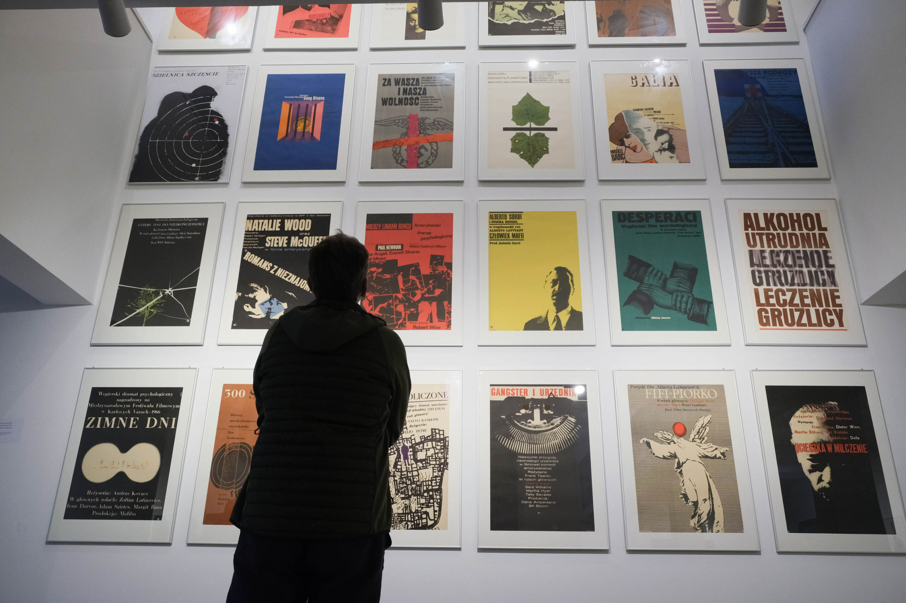
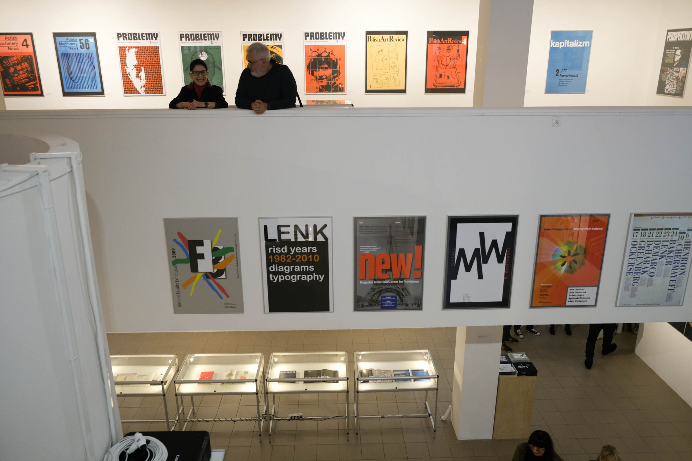
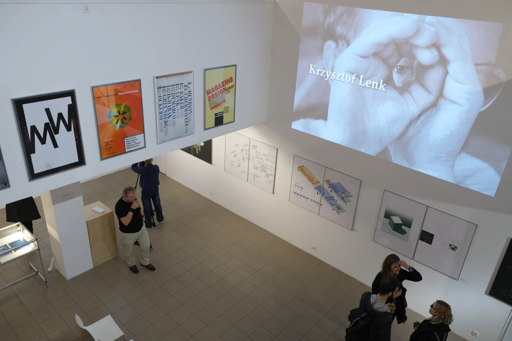

Lenk Retrospective 1963-2018
Sławomir Kosmynka
2019, Kobro Gallery at Strzemiński Academy of Fine Arts and Design in Łódź
 View PDF
View PDF
A catalog of Krzysztof Lenk’s retrospective exhibition held in the Kobro Gallery at Strzemiński Academy of Fine Arts and Design in Łódź, Poland, in 2019. The exhibition was curated by prof.
The body of work shown in this catalog is accompanied by an introduction by the Rector of the Academy, professor Jolanta Rudzka-Habisiak, and essays written by:
- Mariusz Knorowski – historian and art critic, curator at the Poster Museum in Warsaw, Poland
- Jan Kubasiewicz – professor at Massachusetts College of Art and Design in Boston, USA, founder and head of Dynamic Media Institute
- Marcin Giżycki – animation film historian and filmmaker, professor at the Polish-Japanese Academy of Information Technology in Warsaw, Poland, and visiting professor at Rhode Island School of Design
- Piotr Rypson – curator and visual culture historian
- Sławomir Kosmynka – graphic designer, typographer, professor at the Academy of Fine Art and Design in Łòdź, Poland
Also included is a list of Krzysztof Lenk’s activities and achievements, as well as an index of books and articles published by him and about him.


